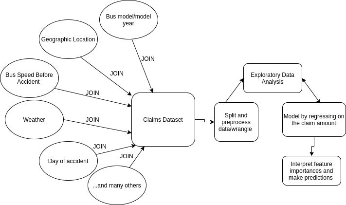

- Business Questions
- Research Questions of Interest to address 1.
- Data Overview
- Data Product
- Proposed Methodology
- Rough Timeline
Vision over Transit Incidents and Claims
Data Driven Approaches to Reducing Insurance Costs to TransLink
Merve Sahin, Brayden Tang, Simardeep Kaur, Xugang Zhong
UBC MDS Capstone
Overview

Business Question - high costs
- Insurance premium is one of the largest spendings in TransLink's budget
- In the past five years, claim costs have increased by about 122.5%
- Therefore, we have been asked to find:
- potential strong predictors of claim severity/frequency that TransLink can leverage to help reduce costs
Research Questions
- What are the main predictors of the frequency and severity of bus accidents?
- Driver characteristics (probation period, experience)
- Claim types and other accident descriptions
- Bus model/model year
- Bus routes
- Acceleration/decceleration
- Weather
- Time
- Geographic location
- and more
Research Questions (cont)
- Within specific categorical features (such as claim type codes), are there specific clusters or groupings that are particularly noteworthy for having worse or better claims/accident experience?
High Level Data Descriptions
- Bus Speeds for All Routes, Route Information
- Actual Incidient Reports
- Collisions (Preventable and Non-Preventable)
- Claims
Bus Speeds for All Routes, Route Information

Actual Incidient Reports

Collisions (Preventable and Non-Preventable)

Claims

Data Product
A reproducible, interactive report that allows the reader to:
- visualize relationships between claim frequency/severity and specific variables interactively

Data Product (cont)
- A fully reproducible data pipeline
- user-friendly way to run the entire data analysis front to back using simple Make commands
- stored on a Docker container
- detailed documentation describing how to run the analysis and the code
Methodology
- Join all datasets together, split, exploratory data analysis, model, interpret
- Machine learning model that takes in multiple inputs at once
- Emphasis on models that can be interpreted (feature importance scores)
